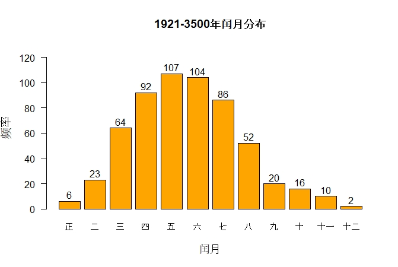
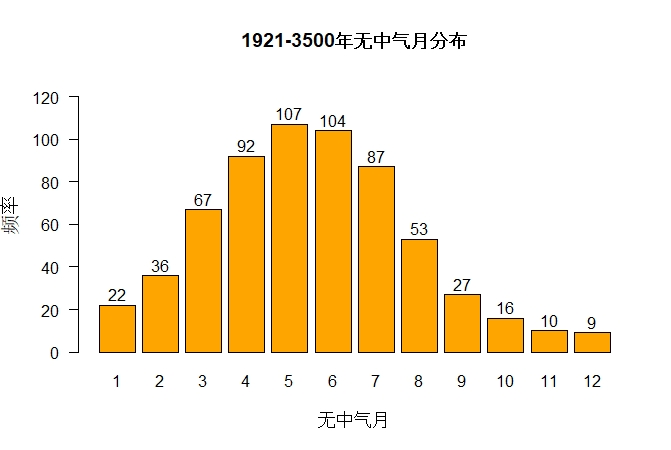

初稿: 2026年2月3日
自顺治二年(1645年)采用定气计算二十四节气以来，闰正月和闰十二月至今未曾出现。我用《农历的编算和颁行》GB/T 33661-2017 法则计算由现在到3500年间的闰月，发现闰正月只出现六次，闰十二月只出现两次。下一次闰正月会出现在2262年(壬寅年)，而闰十二月要到中历3358年(戊午年)才会出现。
以下详述为什么闰正月和闰十二月特别罕见。这里假设读者已经了解农历编算法则网页详述的法则，这里不会重复所有法则及相关的历法概念。
以下计算是用我的公历-中历转换 python 软体套件执行，大部分的计算过程在这 Jupyter notebook 最后一节展示。
下面用Ny表示年首最接近公历1月1日的中历年，用Sy表示y岁，即从Ny-1十一月初一至Ny十一月初一之前一日。例如N1984指甲子年，始于1984年2月2日，终于1985年2月19日; S1984指N1983(癸亥年)十一月初一(1983年12月4日)至N1984闰十月廿九(1984年12月21日)。
S1921 – S3500有582个闰月，下图展示这段期间的闰月分布。

此图证实了闰正月和闰十二月确是最罕见的闰月，在这1580岁间闰正月只出现六次，闰十二月只出现两次。
出现闰正月的必要条件是无中气月出现在雨水(2月19日左右)和春分(3月21日左右)之间，出现闰十二月的必要条件是无中气月出现在大寒(1月21日左右)和雨水(2月19日左右)之间。这两种闰月之罕见，一般解释是说地球在近世纪于1月初过近日点，这期间地球运行比较快，使大寒与雨水及雨水与春分间的日数相对较小，无中气月出现在相邻两中气间的次数也因此较少，但以下分析显示这只是部分原因。
下表列出在S1921 – S3500间相邻两中气间之平均日数。
| 中气区间 | 平均日数 |
|---|---|
| 冬至(十一月中) - 大寒(十二月中) | 29.483 |
| 大寒(十二月中) - 雨水(正月中) | 29.526 |
| 小雪(十月中) - 冬至(十一月中) | 29.692 |
| 雨水(正月中) - 春分(二月中) | 29.805 |
| 霜降(九月中) - 小雪(十月中) | 30.095 |
| 春分(二月中) - 谷雨(三月中) | 30.256 |
| 秋分(八月中) - 霜降(九月中) | 30.598 |
| 谷雨(三月中) - 小满(四月中) | 30.760 |
| 处暑(七月中) - 秋分(八月中) | 31.065 |
| 小满(四月中) - 夏至(五月中) | 31.187 |
| 大暑(六月中) - 处暑(七月中) | 31.366 |
| 夏至(五月中) - 大暑(六月中) | 31.408 |
可见闰月的出现次数与相邻两中气间的平均日数确有密切关系，夏至(五月中)至大暑(六月中)的平均日数最大，预示闰五月应该最常见，事实上确是如此。如果假设平均日数与闰月出现的次数成反比，则从表中数据推断闰月出现次数从多至少的次序应该是:闰五月、闰六月、闰四月、闰七月、闰三月、闰八月、闰二月、闰九月、闰正月、闰十月、闰十二月和闰十一月，这次序确与图一的结果大致符合，但在闰九月后的次序错了。冬至(十一月中) 至大寒(十二月中)的平均日数最小，但闰十一月并不是最罕见的闰月，由此可见仅凭相邻两中气间的平均日数不足以解释为什么闰正月和闰十二月最罕见，肯定还有其他原因。
如前述，无中气月是闰月的必要条件。现代农历法则规定，闰月出现在闰岁中冬至后第一个无中气月，双中气月和伪闰月的出现使情况变得复杂。「平岁」是指有十二个月的岁，「闰岁」指有十三个月的岁，「双中气月」指有两个中气的农历月，「伪闰月」是指无中气月但不是闰月的月份。
大寒(十二月中) 至雨水(正月中)间的无中气月及雨水(正月中) 至春分(二月中)间的无中气月在近几个世纪确实出现过，下面考察几个例子。
清穆宗同治九年(N1870)的大寒与同治十年(N1871)雨水之间就有一个无中气月，但这无中气月出现在平岁中，所以不能置闰而成为伪闰月，同治九年冬至和大寒都落在十一月，下一个月份没有中气。农历N1984(甲子年)雨水与春分之间有无中气月，是闰正月的必要条件，但这无中气月出现在平岁中，因此同样是伪闰月，此岁的冬至和大寒都落在十一月，下一个月份没有中气。农历N2034(甲寅年)雨水与春分之间有无中气月，是闰正月的必要条件，虽然这无中气月出现在闰岁中，但是这是此岁的第二个无中气月，错失了闰正月的资格而成为伪闰月，农历N2033(癸丑年)的大雪和冬至都落在十一月，下一个月是无中气月，又是闰岁中冬至后的第一个无中气月而成为闰十一月，然后大寒和雨水都落在十二月，下一个月是闰岁中的第二个无中气月，成为伪闰月。
雨水和春分间的无中气月会出现在N2053(癸酉年)、N2129(己丑年)、N2148(戊申年)、N2167(丁卯年)、N2205(乙巳年)及N2243(癸未年)，但情况与上述一样，无中气月出现在平岁中或是闰岁中的第二个无中气月，所是都是伪闰月。这情况要到N2262(壬寅年)才有转变，那会是自顺治二年来六百多年间首次出现闰正月。大寒与雨水之间的无中气月会出现在N2500(庚子年)、N2557(丁酉年)、N2595(乙亥年)、N2777(丁丑年)、N2872(壬子年)、N2891(辛未年)及N2986(丙子年)，但全部都是伪闰月，闰十二月要到N3358(戊午年)才会出现。
地球在近日点附近运行快使在这附近的中气日期间隔较短，不但减少了在这些中气之间无中气月的出现，还增加了双中气月出现的频率。朔望月的平均值是29.530589日，如果相邻两中气的平均日数小于此数，则出现两中气同在一个农历月的频率多于出现在两中气之间的无中气月。观乎表一的数据得知有两个中气区间的平均日数小于29.53日:冬至(十一月中)至大寒(十二月中)和大寒(十二月中)至雨水(正月中)，所以出现含冬至和大寒的双中气月频率多于出现在冬至和大寒之间的无中气月; 出现含大寒和雨水的双中气月频率多于出现在大寒和雨水之间的无中气月。计算显示在S1921–S3500间，含冬至和大寒的双中气月有17个，冬至和大寒之间的无中气月有10个，含大寒和雨水的双中气月有14个，大寒和雨水之间的无中气月有9个，此数据证实了理论的预测。这两种双中气月的出现使情况变得非常有趣。
先分析如果含冬至和大寒的双中气月出现时的情况。由于冬至在这双中气月中，根据现代农历法则这双中气月是十一月。农历月的日数是29日或30日，从表一得知冬至至大寒的平均日数是29.48日，由此推出冬至在十一月初、大寒在十一月末，也可推出这十一月出现在平岁中，因为闰岁的冬至出现在十一月(大概)十九日以后。平岁有十二个农历月，冬至至下一个岁的冬至之间有十二个中气:十一月中(冬至)、十二月中(大寒)、正月中(雨水)、二月中(春分)、三月中(谷雨)、四月中(小满)、五月中(夏至)、六月中(大暑)、七月中(处暑)、八月中(秋分)、九月中(霜降)和十月中(小雪)。已知冬至和大寒都在十一月，余下的十个中气落在余下的十一个月中，所以必然有一个无中气月，但平岁没有闰月，当中的无中气月只能是伪闰月。用 F 表示这无中气月，F-1 表示 F 之前的那个月，F+1 表示 F 之后的那个月。由于 F 是无中气月，而表一显示相邻两中气的平均日数是29.48日至31.41日之间。由此推出必有一个中气出现在 F-1 的月末，另一中气出现在 F+1 的月初。已知大寒出现在十一月末，十一月有可能就是 F-1，而 F 是十二月，出现在大寒与雨水之间，但大寒与雨水的平均日数是29.53日，未必有足够多的日数容纳一个农历月，所以伪闰月 F 或会推迟到正月而出现在雨水与春分之间或更迟。这情况的实例是S1985，伪闰月是正月，出现在雨水与春分之间。另一例是S1871，伪闰月是十二月，出现在大寒与雨水之间。
现在分析含大寒和雨水的双中气月，用 D 表示这月，D-1 表示之前的那个月，D+1 表示之后的那个月等。大寒必然在 D 的月初，雨水必在月末。D 有两种可能的情况。
第一种可能是冬至在 D-1，换言之D-1是十一月，D 是十二月。由于大寒在十二月初，冬至必在十一月初，所以 D 是平岁的十二月。平岁有十二个月，已知十一月中(冬至)在十一月，十二月中(大寒)和正月中(雨中)都在十二月，余下的九个中气(二月中至十月中)必然在余下的十个月(正月至十月)中，所以有一个无中气月。由于平岁没有闰月，所有无中气月都变成伪闰月。伪闰月可能在雨水与春分之间或迟些。这情况的实例是S2148，伪闰月在雨水与春分之间。
第二种可能是 D-1 是无中气月，而冬至在 D-2 的月末，即是说D-2 是闰岁的十一月，D-1 是闰岁中冬至后第一个无中气月，按农历编算法则是闰十一月，D 仍是十二月但在闰岁中。闰岁有十三个月，已知十一月中(冬至)在十一月，闰十一月无中气，十二月中(大寒)和正月中(雨水)都在十二月，余下的九个中气(二月中至十月中)必然在余下的十个月(正月至十月)中，所以有一个无中气月。由于这无中气月不是闰岁冬至后的第一个无中气月，又是伪闰月，伪闰月可能出现在雨水和春分之间或迟些。这情况的实例是S2034，伪闰月出现在雨水和春分之间。如我在农历编算例子网页所述，农历N2033和N2034很特别，不单N2033十二月是双中气月，十一月也是双中气月，含小雪和冬至，另有无中气月在N2033七月后的那个月，由于S2033是平岁，不能置闰，这无中气月又是伪闰月。
由此可见在大寒和雨水之间的无中气月及在雨水和春分之间的无中气月确是较为罕见，当这两种无中气月出现时，往往又伴随着双中气月而变为伪闰月。
要知道"丢失"的闰正月和闰十二月是否隐藏在伪闰月中，可以找出所有的无中气月，看看是否能得到与表一日数预示的频率次序。出现在正月中(雨水)和二月中(春分)之间的无中气月无论是闰正月还是伪闰月都用'1'来记，出现在二月中(春分)和三月中(谷雨)之间的无中气月无论是闰二月还是伪闰月都用'2'来记，其他无中气月也用类似的记法。下图显示S1921 – S3500的无中气月分布。

可见各无中气月的出现频率基本上符合与相邻两中气的日数成反比的关系，唯一例外是在十一月中至十二月中之间的无中气(标记'11')与在十二月中至正月中之间的无中气月(标记'12')的次序颠倒了，但是两者都很小而且只是差了一个而已，极有可能是因为罕见(1580岁中只出现了10次和9次)而数据不足，无法反映真实频率。
图二中的 '1' 与 '12' 频率明显大大多于闰正月和闰十二月的频率，显示'1'和 '12' 的无中气月确是隐藏在伪闰月中。'1' 的无中气月在S1921 – S3500的数目是22，出现频率多于'10'、'11' 和 '12'，但其中16个无中气月变成伪闰月，以致闰正月数目只有6个，频率少于闰十月和闰十一月的频率，所以闰正月被双中气月抑制了。
同样，'12' 的无中气月与 '11' 的无中气月频率接近，这也是意料之中，因为从表一得知十二月中至正月中的平均日数是29.526日，而十一月中至十二月中的平均日数是29.483日，两者只差0.043日。但是'12'的9个无中气月中其中7个变成了伪闰月，剩下的2个成为闰十二月，闰十二月也被双中气月抑制了。
'11' 的无中气月数目是10，虽然数目小，但全部是闰十一月，闰十一月完全没有被双中气月抑制，这也不难理解，因为伪闰月不可能出现在冬至与大寒之间。设 N 是出现在冬至与大寒之间的无中气月，N-1 是之前那个月，N+1 是之后那个月等，则冬至在 N-1 的月末，大寒在 N+1 的月初，所以 N-1 是闰岁中的十一月，N 是闰岁中冬至后第一个无中气月，根据现代农历法则 N 必然是闰十一月，所以 '11' 的无中气月都是闰十一月。
顺治二年(N1645)之前的中历用平朔计算二十四节气，两中气的时间间隔是常数并且大于三十日，由于中历月最多三十日，不可能出现双中气月，定无中气月为闰月就解决了置闰问题。改用定气后，两中气之间的日数不是常数，而且可以小于三十日，于是有可能出现双中气月。由于一岁的中气数目一般是十二，平岁有十二个月，闰岁有十三个月，如果有双中气月出现在平岁中，其余十个中气就会落在余下的十一个月中，导致多了一个无中气月成为伪闰月;如果有双中气月出现在闰岁中，其余十个中气就会落在余下的十二个月中，导致闰岁有两个无中气月，其中一个是闰月，另一个是伪闰月。因此双中气月的出现使无中气月的数目多于闰月所需的数目，额外的无中气月成为伪闰月。正月中至二月中的无中气月('1')以及出现在十二月中至正月中的无中气月('12')有一大部分成为伪闰月。这两种无中气月数目本来已经不多('1'在S1921–S3500的数目是22，'12' 的数目是9)，伪闰月的出现进一部减少了闰正月和闰十二月的数目，使闰正月和闰十二月变得非常罕见。
或许有人会疑惑如果两中气的时间小于朔望月，怎可能在中间出现无中气月。答案是农历日始于朔日的午夜，而不是合朔时刻，现举S2034的闰十一月为例说明。此岁的冬至在2033年12月21日 21:46 (UTC+8)，大寒在2034年1月20日 8:27 (UTC+8)，两中气之间的时间间隔是29.445日，但两中气日之间的日数是30日。有朔出现在12月22日 2:46 (UTC+8)，下一个朔在1月20日 18:02 (UTC+8)，两朔的时间间隔是 29.636日，大于两中气之间的时间间隔，但两朔日之间的日数是29，小于两中气日之间的日数。第一个朔日对应的农历月始于12月21日的零时(而不是合朔时刻 2:46)，终于1月20日零时(而非合朔时刻18:02)，由于此月不含中气而且是闰岁中冬至后第一个无中气月，按农历法则定为闰十一月。虽然第二个合朔时刻迟于大寒时刻，大寒与朔日仍在同一日，属第二个合朔对应的农历月。
冬至在十一月的日数和「闰余」的概念相似，闰余指冬至的月龄，即冬至离之前合朔的日数。回归年有365.2422日，朔望月的平均日数是29.530589日。因365.2422 = 12×29.530589 + 10.875 = 13×29.530589 - 18.655，如果本岁是平岁，则下一岁的闰余增加约10.875日，这是平均值，由于用定朔定气，实际的日数在平均值一两日间浮动; 如果本岁是闰岁，则下一岁的闰余减小18.655日(平均值)。从闰余的定义得知闰余在0与朔望月之间，所以如果本岁的闰余超过约18.655日，本岁是闰岁。闰余18.655日约相当于冬至在十一月十九日或二十日，所以冬至出现在十一月初的岁是平岁，出现在十一月末是闰岁。